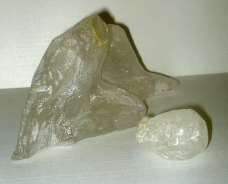
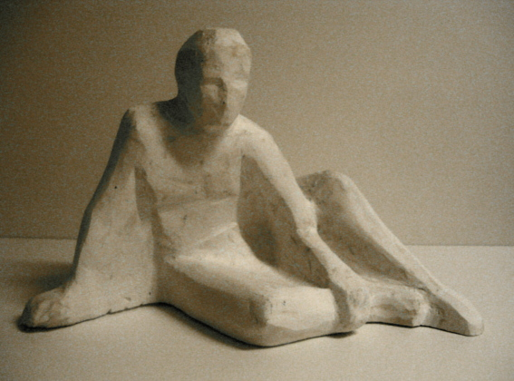

Uunista tuli
|

Piti tulla
|
Oikeanpuoleinen kuva on kipsivaloksesta jota k‰ytin muotinteon mallineena.
Lasin valos on vasemmalla ja kuten n‰kyykaula on napsahtanut poikki.
Syy on samantapainen kuin edellisess‰.
Liian kova muottiaine leuan ja alla olevan polven v‰liss‰ ik‰‰nkuin kiilaa p‰‰n irti.
Korjaava toimenpide on erikoinen. P‰‰ kiinnitet‰‰n takaisin tipalla sopivaa liimaa.
Ymp‰rille tehd‰‰n uusi muotti pehme‰mm‰st‰ muottiseoksesta (=v‰hemm‰n kipsi‰).
Silatetaan uudelleen. kun lasi sulaa, p‰‰ tarttuu kiinni.